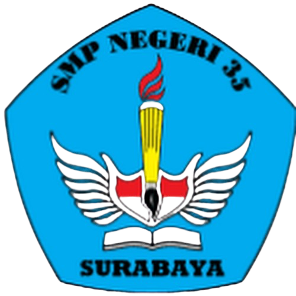
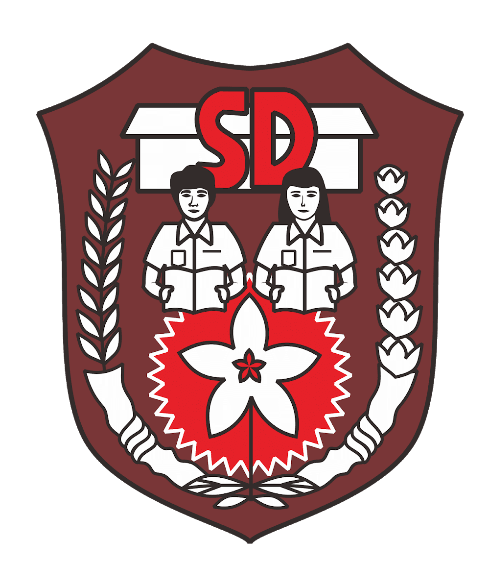
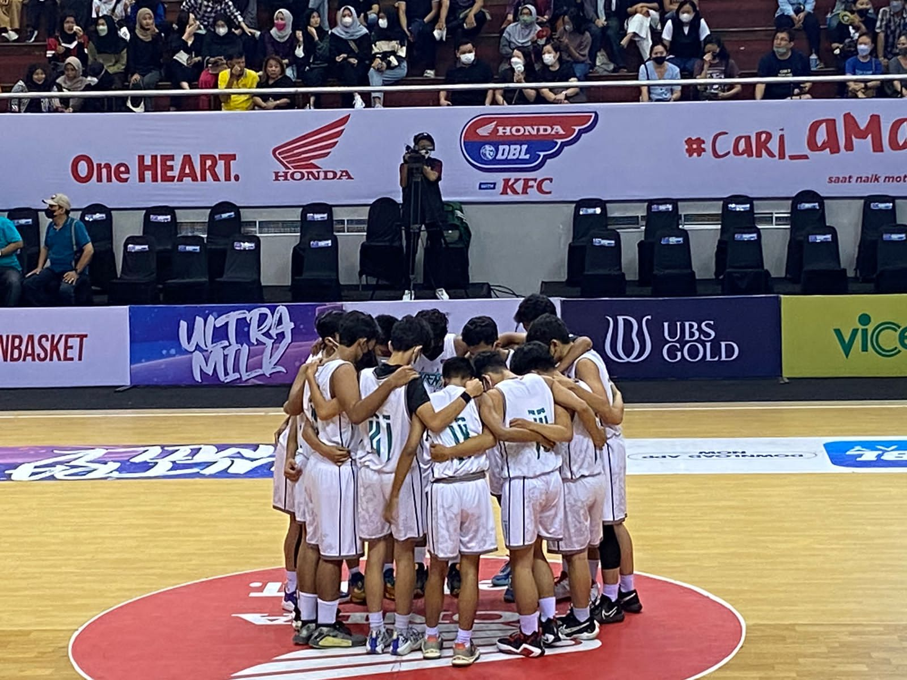
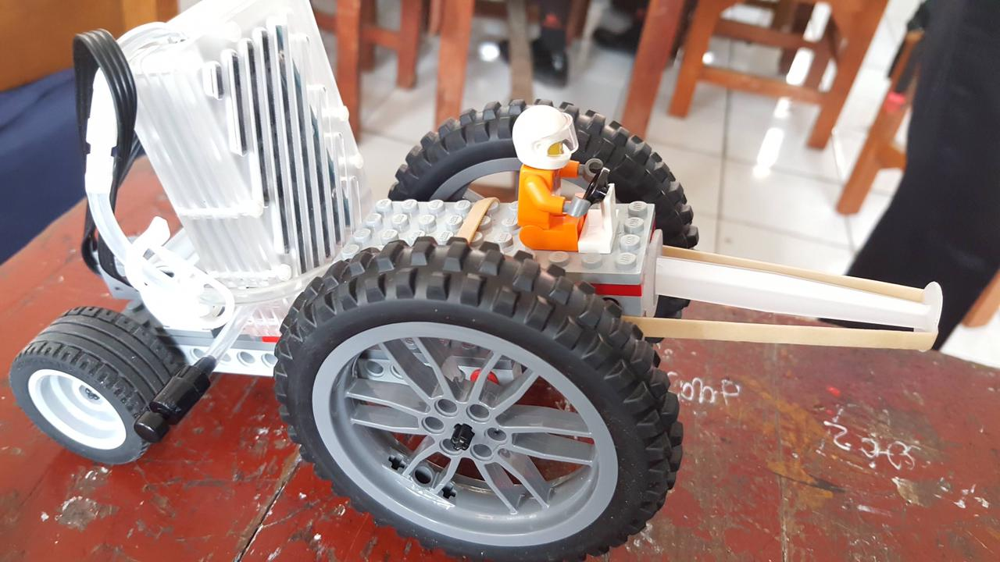
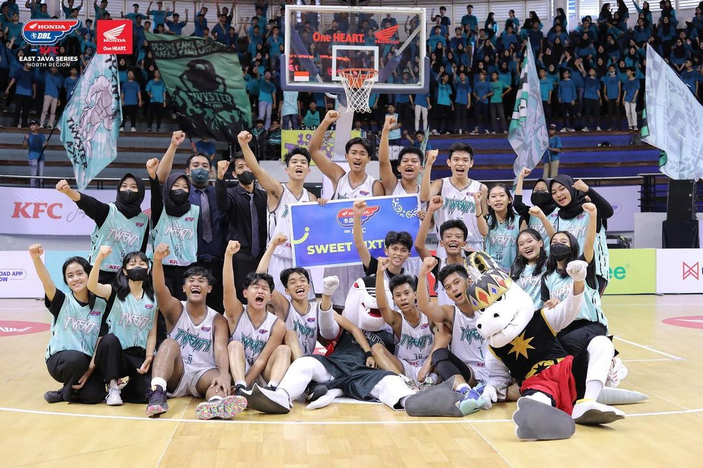
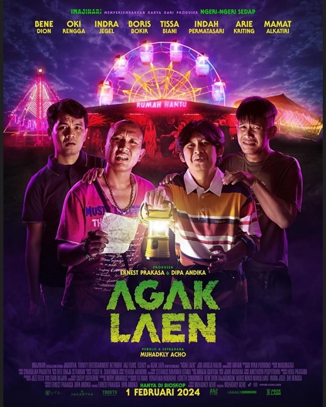
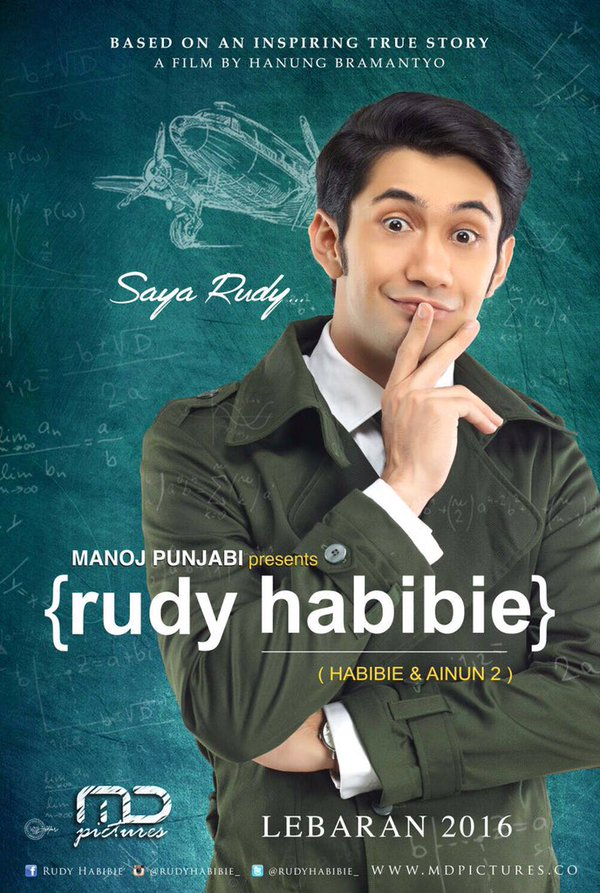

Mirza Syahrizal Fathir
Mahasiswa
Deskripsi
Saya adalah seorang pengembang web dengan pengalaman dalam menciptakan solusi web yang inovatif dan menarik. Dengan keahlian dalam berbagai bahasa pemrograman dan desain, saya bersemangat untuk mengubah ide-ide menjadi kenyataan melalui teknologi.
Riwayat Pendidikan
- Institut Teknologi Sepuluh Nopember - S1 Teknik Informatika (2023 - Sekarang)
-
 SMA Negeri 20 Surabaya - IPA (2020 - 2023)
SMA Negeri 20 Surabaya - IPA (2020 - 2023)
-  SMP Negeri 35 Surabaya (2017 - 2020)
-  SDN Buncitan (2011 - 2017)
Prestasi
-  Juara 2 Lomba Basket (2020)
-
 Delegasi Pelajar Surabaya-Busan (2019)
Delegasi Pelajar Surabaya-Busan (2019)
-  Juara 1 Lomba Merakit Mobil Hidrogen (2019)
Hobi
- BASKET 
-
TRAVELLING

TOP 3 FILM
-

AGAK LAEN
Saya suka film ini karena membawakan konsep yang baru untuk industri film Indonesia dengan menggabungkan genre komedi dengan horror.
-

COACH CARTER
Film ini sangat menarik bagi saya yang memiliki hobi bermain basket.
-

RUDY HABIBIE
Selalu berkesan ketika menonton film tentang Habibie, tetapi Rudy Habibie (Habibie & Ainun 2) yang menjadi favorit saya karena terfokus dengan masa muda Habibie.
Form Pengiriman
Text Field
Text: